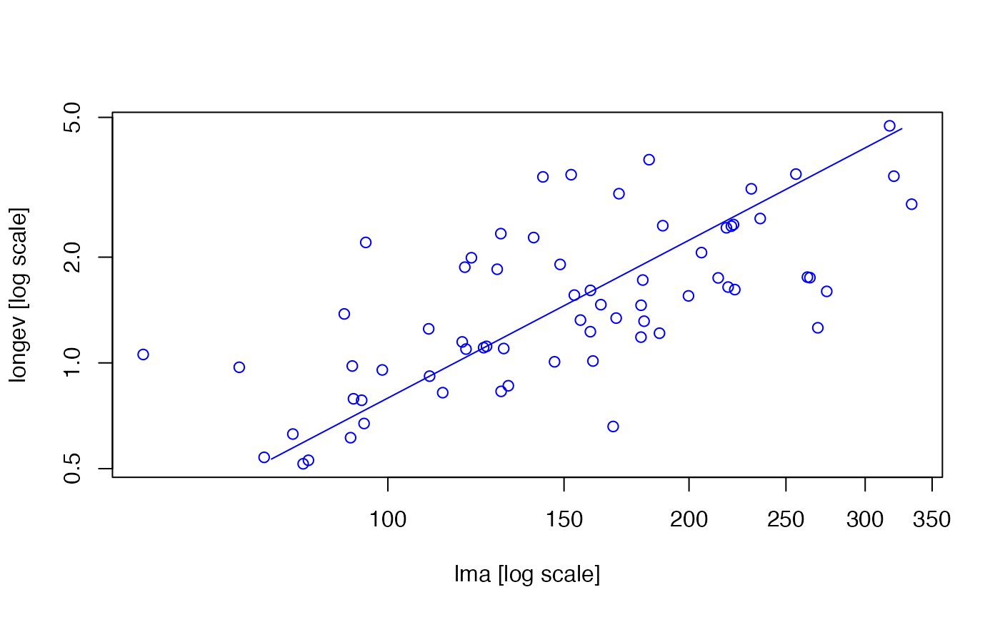

Below contains a brief overview on how to get users started with smatr
More detailed information about the package can be found here: Warton, D. I., Duursma, R. A., Falster, D. S., & Taskinen, S. (2012). smatr 3–an R package for estimation and inference about allometric lines. Methods in Ecology and Evolution, 3(2), 257-259.
First, install smatr`
# Install via CRAN or github
install.packages("smatr")
devtools::install_github("dfalster/smatr3")then load the library
Note we will illustrate some of the core functions of smatr using one of the two data sets included in the package
Users can fit a single major axis to their data using the ma(y ~ x) or sma(y ~x) functions for y against x. The log argument allows quick transformations to one or both axes before estimation occurs. For example:
# Extract only low-nutrient, low-rainfall data from leaflife dataset:
leaf.low <- subset(leaflife, soilp == 'low' & rain == 'low')
# Fit a single MA for log(leaf longevity) vs log(leaf mass per area):
ma(longev ~ lma, log='xy', data=leaflife)
#> Call: sma(formula = ..1, data = ..3, log = "xy", method = "MA")
#>
#> Fit using Major Axis
#>
#> These variables were log-transformed before fitting: xy
#>
#> Confidence intervals (CI) are at 95%
#>
#> ------------------------------------------------------------
#> Coefficients:
#> elevation slope
#> estimate -3.085214 1.492616
#> lower limit -3.968020 1.146777
#> upper limit -2.202407 2.001084
#>
#> H0 : variables uncorrelated
#> R-squared : 0.4544809
#> P-value : 4.0171e-10Users can specify using the argument slope.test in the ma() or sma() function to test whether the estimated slope is significantly different from 1. Calling summary to sma or ma objects will return confidence intervals for the slope and/or elevation.
# Test if the MA slope is not significantly different from 1 for longevity and leaf mass per area (LMA):
ma_obj <- ma(longev ~ lma, log='xy', slope.test=1, data=leaflife)
summary(ma_obj)
#> group n r2 pval Slope Slope_lowCI Slope_highCI
#> group all 67 0.4544809 4.01707e-10 1.492616 1.146777 2.001084
#> Int Int_lowCI Int_highCI Slope_test Slope_test_p Elev_test
#> group -3.085214 -3.96802 -2.202407 1 0.003539277 NA
#> Elev_test_p
#> group NA
plot(ma_obj)
Often researchers wish to compare between slopes or intercepts of axes between different groups. Lets say we want to compare between high and low rainfall for low nutrient sites ONLY
# First we subset the data that is relevant
leaf.low.soilp <- subset(leaflife, soilp == 'low')
# Then using * we can fit SMAs separately at each of high and low rainfall sites and test for whether sites with different rainfall share a common slope
rain_sma_obj <- sma(longev~lma*rain, log="xy", data=leaf.low.soilp)
# Lets plot longevity vs LMA separately for each group first:
plot(rain_sma_obj)By default, the sma() function will first fit a common slope for all groups and then test whether there is a difference in elevation
# Fit SMAs for each group and tests if several SMA lines share a common slope.
rain_sma_obj <- sma(longev~lma*rain, log="xy", data=leaf.low.soilp)
summary(rain_sma_obj)
#> group n r2 pval Slope Slope_lowCI Slope_highCI Int
#> 1 high 17 0.3407371 0.0138909094 1.176888 0.7631512 1.814929 -2.321737
#> 2 low 10 0.8065100 0.0004170919 1.786551 1.2572572 2.538672 -3.837710
#> Int_lowCI Int_highCI Slope_test Slope_test_p Elev_test Elev_test_p
#> 1 -3.475559 -1.167915 NA NA NA NA
#> 2 -5.291926 -2.383495 NA NA NA NAAgain, using the slope.test will test whether the common slope is significantly different to 1.
# Fit SMAs separately at each of high and low rainfall sites,
# and test if there is a common slope and whether it is equal to 1:
rain_slope_obj <- sma(longev~lma*rain, log="xy", slope.test=1, data=leaf.low.soilp)
summary(rain_slope_obj)
#> group n r2 pval Slope Slope_lowCI Slope_highCI Int
#> 1 high 17 0.3407371 0.0138909094 1.176888 0.7631512 1.814929 -2.321737
#> 2 low 10 0.8065100 0.0004170919 1.786551 1.2572572 2.538672 -3.837710
#> Int_lowCI Int_highCI Slope_test Slope_test_p Elev_test Elev_test_p
#> 1 -3.475559 -1.167915 1 0.44732920 NA NA
#> 2 -5.291926 -2.383495 1 0.00427036 NA NAThe type argument allows users to test for a change in elevation
# Fit SMAs separately at each of high and low rainfall sites, and test whether sites differ in the elevation of their SMA
rain_elev_obj <- sma(longev~lma*rain, log="xy", type = "elevation", data=leaf.low.soilp)
summary(rain_elev_obj)
#> group n r2 pval Slope Slope_lowCI Slope_highCI Int
#> 1 high 17 0.3407371 0.0138909094 1.176888 0.7631512 1.814929 -2.321737
#> 2 low 10 0.8065100 0.0004170919 1.786551 1.2572572 2.538672 -3.837710
#> Int_lowCI Int_highCI Slope_test Slope_test_p Elev_test Elev_test_p
#> 1 -3.475559 -1.167915 NA NA NA NA
#> 2 -5.291926 -2.383495 NA NA NA NAThe type argument allows users to also test for shifts along a common axis
# Fit SMAs with common slope across each of high and low rainfall sites, and test for no shift along common SMA:
rain_shift_obj <- sma(longev~lma+rain, log="xy", type="shift", data=leaf.low.soilp)
summary(rain_shift_obj)
#> group n r2 pval Slope Slope_lowCI Slope_highCI Int
#> 1 high 17 0.3407371 0.0138909094 1.5514 1.109374 2.011726 -3.140896
#> 2 low 10 0.8065100 0.0004170919 1.5514 1.109374 2.011726 -3.304865
#> Int_lowCI Int_highCI Slope_test Slope_test_p Elev_test Elev_test_p
#> 1 -3.475559 -1.167915 NA NA NA NA
#> 2 -5.291926 -2.383495 NA NA NA NA